Aktuálna ponuka
Nehnuteľnosti, ktoré ponúkam
12 nehnuteľností na predaj a prenájom. Vyberte typ, alebo napíšte lokalitu.
12 z 12 ponúk
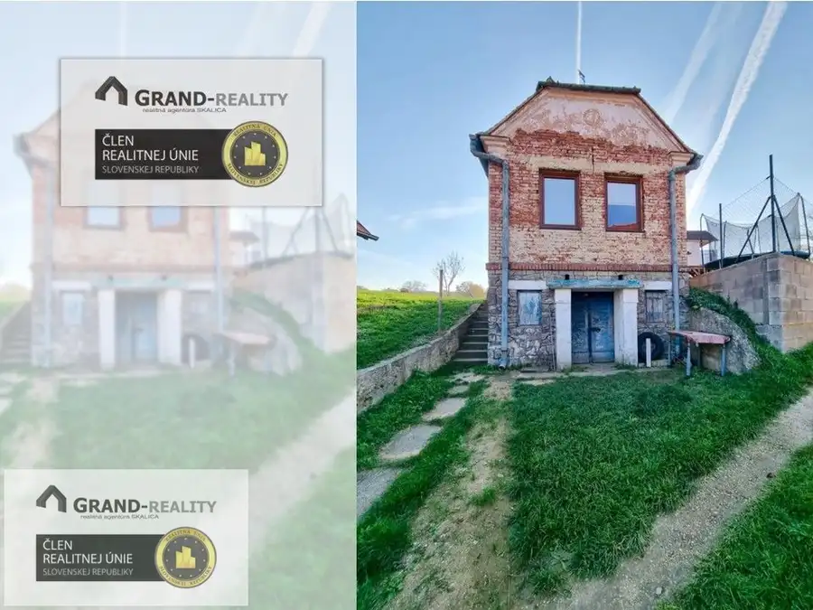
DomNové8 80 000 €ZĽAVNENÉ • Na predaj vinohradnícky dom s pivnicou a pozemkom v Skalici Skalica 58 m² GRAND-REALITY • Ponúkame na predaj zaujímavú ponuku murovaného vinohradníckeho domčeka s historickou klenbovou pivnicou, ktorý je situovaný v…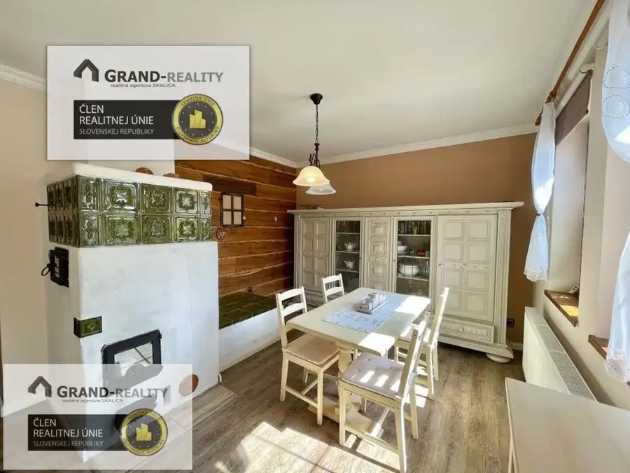
DomNové10 330 000 €ZĽAVNENÉ • Na predaj rodinný dom s hosťovským domom a garážou v meste Skalica Skalica 154 m² GRAND-REALITY • EXKLUZÍVNE LEN U NÁS • Ako výhradný sprostredkovateľ ponúkame na predaj kompletne dokončený 4-izbový rodinný dom s obytným podkrovím…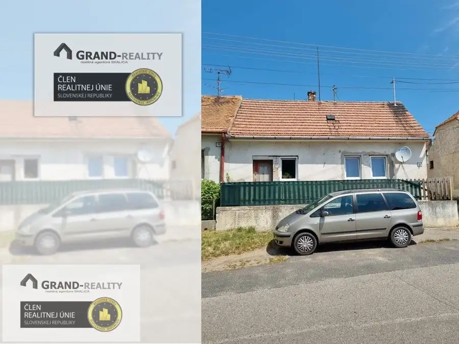
Dom8 40 000 €ZĽAVNENÉ • Na predaj rodinný dom vhodný na modernizáciu v obci Brodské Brodské 65 m² GRAND-REALITY • EXKLUZÍVNE LEN U NÁS • Ako výhradný sprostredkovateľ ponúkame na predaj rodinný dom v obci Brodské, okres Skalica, v zastavanej ulici…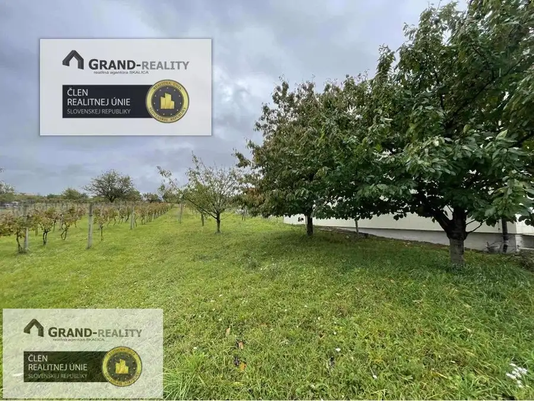
Pozemok7 29 900 €Na predaj vinohrad s domom a pivnicou v Skalici - lokalita Kolísky Skalica 2847 m² GRAND-REALITY • EXKLUZÍVNE LEN U NÁS • Ako výhradný sprostredkovateľ ponúkame na predaj pozemok vo vinohradoch s kamennou pivnicou a starším…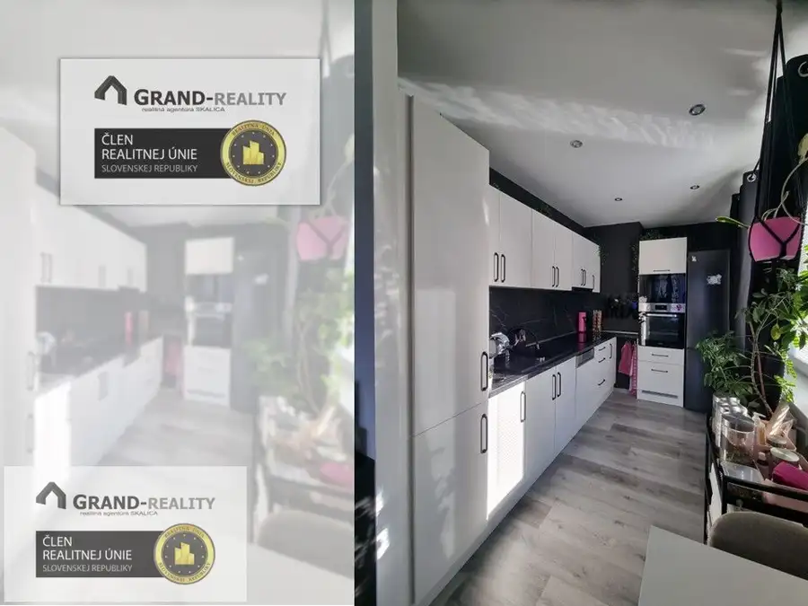
Byt10 116 000 €Na predaj byt 2+1 s lodžiou na ulici M. Nešpora v meste Holíč Holíč 2-izbový54.25 m²3. podlažie GRAND-REALITY • EXKLUZÍVNE LEN U NÁS • Ponúkame na predaj zrekonštruovaný 2-izbový byt s lodžiou v osobnom vlastníctve na ulici M. Nešpora v meste…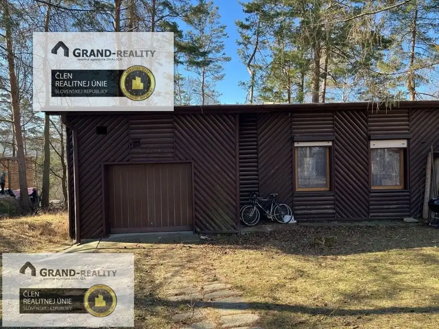
Chata, drevenica, zrub10 105 000 €ZĽAVNENÉ • Na predaj celoročná rekreačná chata v skalickej Zlatníckej doline Skalica 100 m² GRAND-REALITY • EXKLUZÍVNE LEN U NÁS • Ponúkame na predaj priestrannú murovanú rekreačnú chatu s terasou a garážou nachádzajúcu sa v rekreačnej…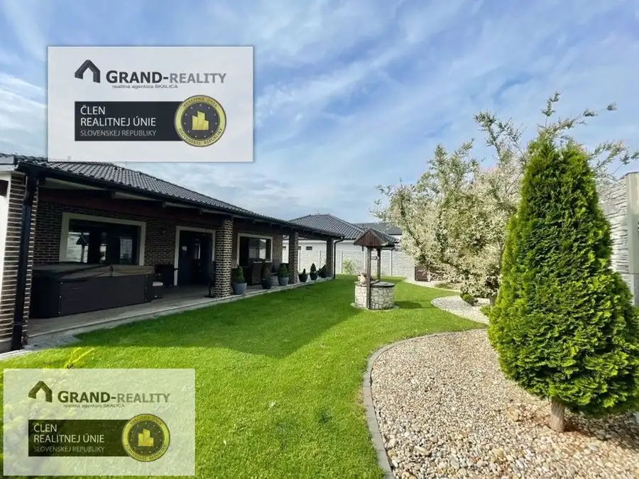
Dom10 399 000 €Na predaj moderná štýlová novostavba s garážou a pozemkom v Skalici Skalica 137 m² GRAND-REALITY • Ponúkame na predaj modernú zaujímavú novostavbu kompletne dokončeného rodinného domu typu bungalov, ktorý sa nachádza v meste…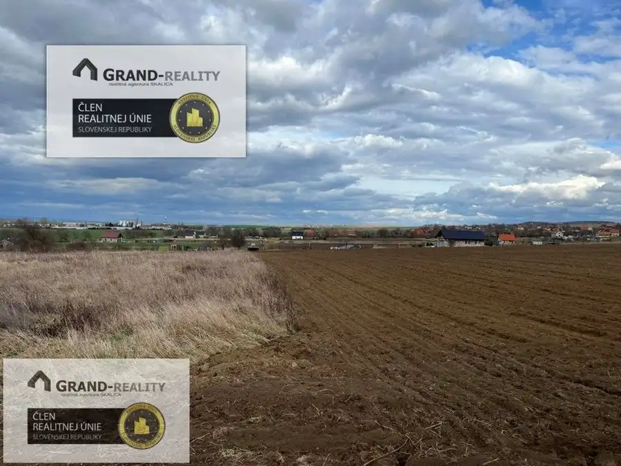
Pozemok4 88 750 €Na predaj pozemok vhodný na stavbu hospodárskej usadlosti v Skalici Skalica 2500 m² GRAND-REALITY • EXKLUZÍVNE LEN U NÁS • Ako výhradný sprostredkovateľ ponúkame na predaj zaujímavý pozemok (ornú pôdu) v k.ú. Skalica, v lokalite…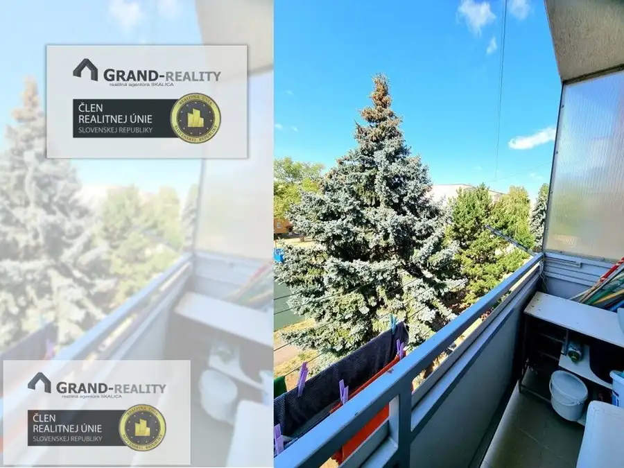
Byt7 89 000 €Na predaj byt 1+1 s balkónom na sídlisku L. Svobodu v meste Skalica Skalica 1-izbový35 m²2. podlažie GRAND-REALITY • Ponúkame na predaj svetlý a prakticky riešený 1-izbový byt vo vyhľadávanej a pokojnej lokalite, na ulici L. Svobodu v Skalici s…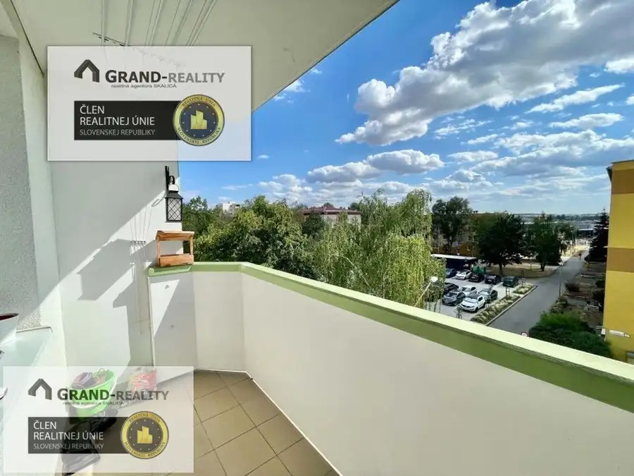
Byt10 146 000 €ZĽAVNENÉ • Na predaj byt 4+1 s balkónom a komorou na ulici Dr. Clementisa v Skalici Skalica 4-izbový84 m²3. podlažie GRAND-REALITY • EXKLUZÍVNE LEN U NÁS • Hľadáte ideálne bývanie pre vašu rodinu, kde má každý člen svoje súkromie a všetko dôležité máte na dosah od…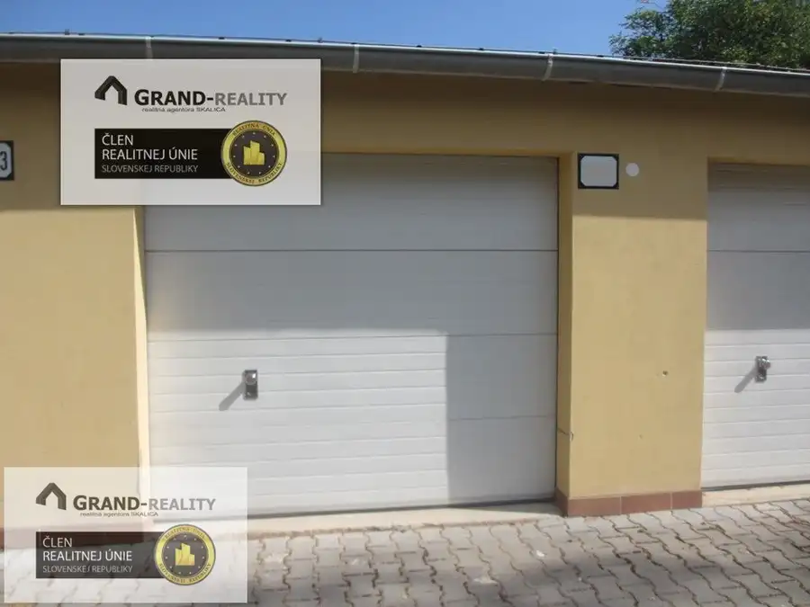
Komerčné priestoryNové3 Cena dohodouNa prenájom garáž na ulici Koreszkova v meste Skalica Skalica 20 m² GRAND-REALITY • EXKLUZÍVNE LEN U NÁS • Ponúkame na prenájom garáž na ulici Koreszkova v meste Skalica. V garáži nie je zavedená elektrina ani voda.…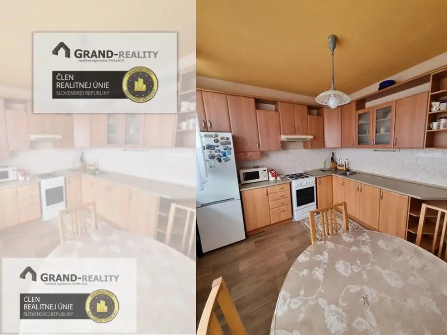
Byt9 Cena dohodouNa prenájom byt 2+1 s balkónom na ulici L. Svobodu v Skalici Skalica 2-izbový64 m²2. podlažie GRAND-REALITY • EXKLUZÍVNE LEN U NÁS • Ponúkame na prenájom pekný 2-izbový byt na sídlisku L. Svobodu v meste Skalica. Nachádza sa na 2. poschodí v…Tomuto výberu zatiaľ nezodpovedá žiadna ponuka. Napíšte mi, čo hľadáte.